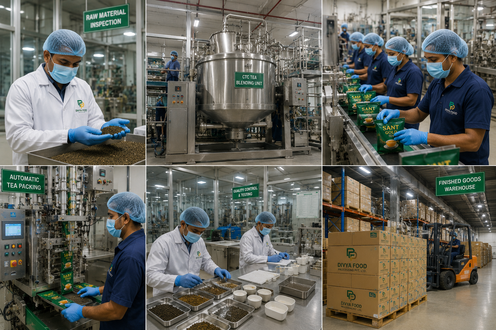

Building the Foundation for Trusted Consumer Brands
Divya Food Processing Private Limited is an emerging food processing and FMCG venture focused on developing scalable consumer brand opportunities, strategic partnerships, and long-term value creation across food categories.
About Divya Food Processing
Divya Food Processing Private Limited was established with the objective of participating in India's evolving food processing and consumer goods sector.
The company is currently focused on strategic planning, business development, brand creation, partnership exploration, and evaluating opportunities across manufacturing, distribution, and consumer products.
The long-term objective is to build a diversified platform spanning food processing, private label manufacturing, consumer brands, and value-added food categories.

Vision & Mission
Our Vision
To build trusted food brands and scalable business platforms that create long-term value for consumers, partners, and stakeholders.
Our Mission
To develop quality-focused consumer products, establish strategic industry relationships, and pursue sustainable growth opportunities within India's food processing and FMCG ecosystem.
Strategic Focus Areas
Our business framework is designed around scalable opportunities that support long-term growth and future value creation.
Consumer Brands
Developing brand-led opportunities designed to serve evolving consumer preferences and emerging market trends.
Food Processing
Exploring scalable processing and manufacturing frameworks that support future product development and business growth.
Private Label Solutions
Evaluating opportunities to support retail, institutional, and commercial partners through customized product solutions.
Market Expansion
Pursuing long-term growth through strategic partnerships, distribution networks, and market development initiatives.
A Disciplined Approach to Growth
The company believes sustainable growth is achieved through careful planning, quality-focused execution, strong partnerships, and responsible business development.
Rather than pursuing expansion without foundation, Divya Food Processing seeks to establish scalable systems capable of supporting long-term growth across multiple food categories.
Growth Journey
Our long-term roadmap is based upon disciplined development and phased expansion.
Current Stage
Strategic Planning
Phase 1
Brand Development
Phase 2
Partnership Exploration
Phase 3
Market Preparation
Future
Expansion Opportunities
Corporate Values
Integrity
Acting responsibly and ethically in all business activities.
Quality
Pursuing excellence across products, systems, and processes.
Accountability
Maintaining responsibility for decisions and outcomes.
Innovation
Exploring opportunities that support sustainable growth.
Partnership
Building long-term relationships based on mutual value.
Long-Term Thinking
Prioritizing sustainable development over short-term gains.
Illustrative Visual Content
Certain images, renderings, conceptual visuals, facility representations, infrastructure concepts, business graphics, and strategic illustrations displayed throughout this website are intended solely for communication, presentation, branding, and conceptual purposes.
Such visuals should not be interpreted as representations of existing manufacturing facilities, production systems, commercial operations, infrastructure, partnerships, certifications, products, or future outcomes.
Actual operations, facilities, products, partnerships, and business activities may differ from any illustrative materials presented.
Strategic Objectives & Future Aspirations
Forward-Looking Information
Certain information presented on this website reflects current objectives, strategic initiatives, development priorities, business planning assumptions, and future aspirations.
Such information should not be interpreted as representations of existing operational capabilities, manufacturing infrastructure, market presence, partnerships, commercial activities, certifications, revenues, financial performance, or future outcomes.
Actual developments may vary based upon business, regulatory, operational, financial, market, and strategic considerations.
Governance & Responsible Development
Sustainable growth requires transparency, accountability, integrity, and disciplined decision-making.
Transparency
Clear communication and responsible stakeholder engagement.
Accountability
Responsible decision-making aligned with long-term objectives.
Sustainability
Building business systems designed for long-term resilience and growth.
"Our objective is not simply to launch products. Our objective is to build a scalable platform capable of creating trusted consumer brands, strategic partnerships, and sustainable long-term value."Divya Food Processing Private Limited
Building for the Future
Divya Food Processing Private Limited is currently focused on establishing strong foundations for future growth through strategic planning, partnership development, market evaluation, operational preparation, and brand creation.
The company believes meaningful enterprise value is created through disciplined execution, quality-focused development, and responsible long-term business building.
Explore Our Growth Vision
Learn more about our strategic roadmap, business verticals, manufacturing philosophy, and long-term objectives.